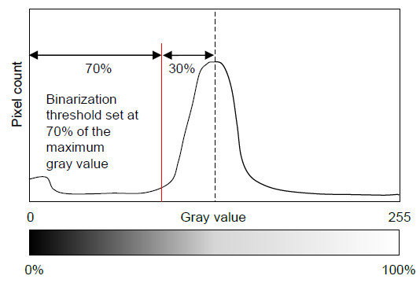

Can Your Particle Counter Be Trusted? A Technical Cleanliness Validation Guide
Published by Ezhilarasan Kandiah on May 20, 2025
The Hidden Risks in Your Cleanliness Reports
Every time your particle counter misses a critical contaminant, you're one step closer to a potential system failure. In the high-precision world of automotive components, where a single 400μm metallic particle can create catastrophic failure, how confident are you in your particle detection process?
This guide reveals the most effective methods to validate your particle counter's reliability and your technical cleanliness team's competence & knowledge that could prevent costly warranty claims and production disruptions.
Beyond Basic Counting: The Four Critical Challenges
Technical cleanliness inspection requires specialized expertise at every stage, but particle analysis presents unique challenges that can compromise your results:
- Filter Occupancy & Uniformity Issues: When particles cluster too closely together across the filter membrane, your counter may detect several small particles as a single large one, or killer particles may hide beneath smaller particles, potentially hiding dangerous particles or causing false failures.
- Thresholding Inconsistencies: Setting the right brightness and thresholding between particles and the filter background is tricky, especially when moving between high and low-density particle occupancy regions of the same filter.
- Particle Nature Misclassifications: The critical difference between a harmless fiber and a dangerous metallic sliver, many systems get this wrong.
- Particle Reconsideration Gaps: Without manual verification of certain particles, particularly metallic slivers that systems often misidentify as fibers, your cleanliness reports may underestimate risks.
Solving Filter Occupancy & Uniformity Problems
When facing filter membrane occupancy or non-uniform particle distribution, reconsider your extraction methodology.
For filter occupancy issues, use a multistage filtration process with the highest pore size filter at the top followed by smaller pore filters at the bottom. If multistage filtration isn't available, consider splitting samples across multiple filters.
For non-uniformity issues, perform extraction again with improved collection techniques. Consider multiple smaller volume collections rather than a single large volume to achieve more even particle distribution.
Implement a pre-scan assessment of filter occupancy before full analysis. If occupancy exceeds the ISO 16232/VDA 19.1 limits (3% for mesh and 1.5% for foam membranes), prepare a new sample with adjusted extraction parameters or use the multistage filtration process.

Figure 1: Example of filter membrane showing particle distribution issues.
Mastering Thresholding Techniques
To overcome thresholding challenges, experienced inspectors should calibrate brightness settings using mid-density areas of the filter rather than focusing on high or low-density regions. Perform multiple threshold adjustments across different filter areas to verify consistent particle detection. Document optimal settings for different component types to ensure consistent analysis.
Remember that threshold optimization should balance detection of both large "killer particles" and smaller particles based on your specific cleanliness requirements.
Figure 2: Thresholding calibration showing particle detection variations.
Correcting Particle Nature Identification
To prevent misclassification of critical metallic particles as fibers, implement a two-stage analysis approach: first with polarizers to identify all particles, then without polarizers to distinguish metallic from non-metallic particles. Review fiber classifications manually, particularly for particles with high reflectivity or metallic appearance. Create a reference library of commonly encountered particle types in your specific production environment.
Enhancing Particle Reconsideration Protocols
Establish a systematic review process for critical particle sizes & implement mandatory manual verification of all particles above your system's critical threshold. Train operators to recognize common misclassification patterns specific to your particle counter system. Implement dual-operator verification for cleanliness reports that are near specification limits. Document frequently encountered anomalies to improve automated detection algorithms.
Measurement System Analysis: Validating Your Particle Counter's Trustworthiness
Why MSA Matters in Technical Cleanliness
Imagine this scenario: Your particle counting results consistently show acceptably clean components, yet your assembly line experiences frequent failures attributed to contamination. Either particles are being generated after inspection, or more concerning your inspection process is missing critical contaminants. Without proper validation, you're making critical decisions based on potentially flawed data.
Setting Up MSA for Particle Counting
Note: This guide assumes basic familiarity with MSA principles. If you need a comprehensive MSA primer, consider AIAG's Measurement Systems Analysis reference manual.
Selecting Test Samples
For meaningful MSA in technical cleanliness applications, prepare filter membranes representing the full spectrum of your normal process variation. Include membranes with low, medium, and borderline-high particle occupancies (staying below the ISO 16232/VDA 19.1 limits). Ensure representative distribution of particle sizes, particularly including critical metallic particles that approach your specification limits. Consider creating reference standards with known particle counts if available.
Conducting the Analysis
Randomize your selected filter membranes to prevent operator bias. Maintain consistent analysis conditions (brightness, thresholding, fiber criteria) to isolate true measurement system variation. Have multiple operators perform repeated measurements of the same filter membranes without knowledge of previous results. Record comprehensive data for each critical measurement parameter (total count, counts by size class, fibers).
Analyzing MSA Results
Minitab or similar statistical software makes MSA analysis straightforward. Focus your analysis on overall measurement system variation (% Gage R&R), repeatability (equipment variation), reproducibility (operator variation), and part-to-part variation (actual differences between filter membranes).
Interpreting Your Results
According to AIAG guidelines, if your Gage R&R is less than 10%, your particle counting system is reliable and decisions based on its data can be trusted. If your Gage R&R is between 10-30%, your system may be acceptable for some applications, but consider improvements, especially for critical cleanliness requirements. diffuser If your Gage R&R exceeds 30%, your measurement system requires significant intervention before results can be trusted for decision-making.
If your Gage R&R exceeds 30%, you need comprehensive process examination—from sample preparation through analysis parameters. This typically indicates fundamental issues in your particle counting methodology that must be addressed before cleanliness reports can be considered reliable.
Need Additional Support?
Implementing robust technical cleanliness validation can be challenging. If your organization is struggling with particle counting reliability, high rejection rates despite acceptable cleanliness reports, or MSA results above 30% Gage R&R, please don't hesitate to reach out for specialized technical assistance. With 15+ years of experience in technical cleanliness inspection according to ISO 16232 and VDA 19.1, I can provide tailored guidance for your specific application challenges.